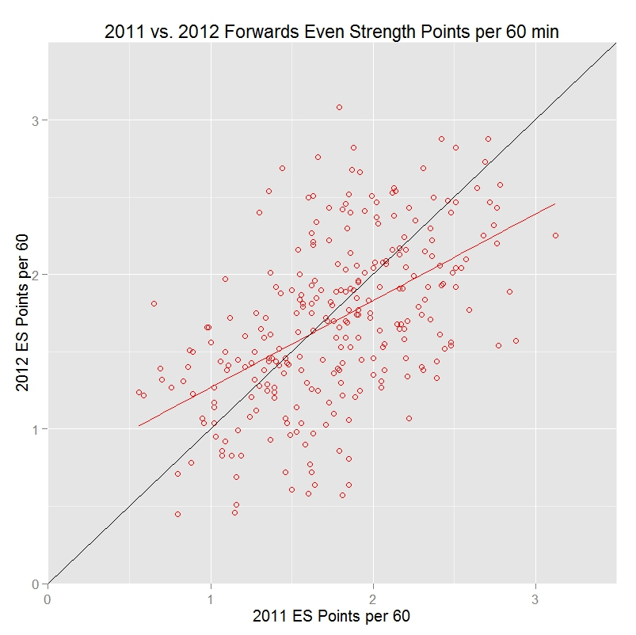
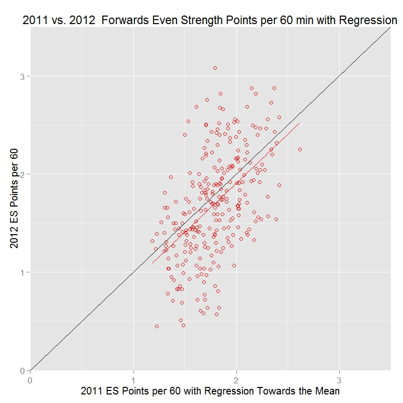
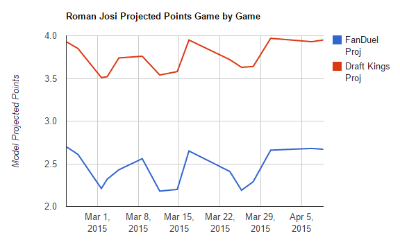
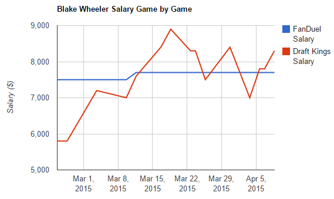
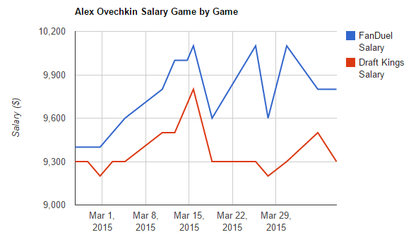
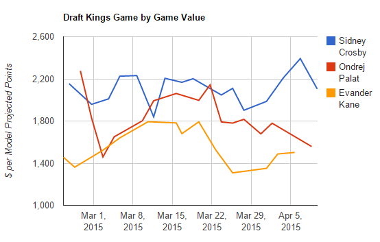
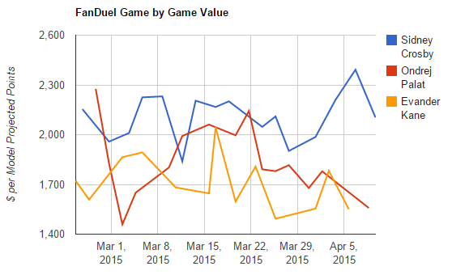
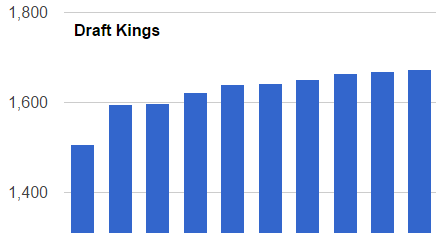

For hockey (and other sports for that matter), FanDuel and DraftKings are the two largest providers of daily fantasy games (DFS). Both of these sites publish game prices for players on a daily basis. However, once the calendar flips over to the next day, there is no record of old prices available. In other words, there is no historical pricing record (at least not publicly). Recognizing that, this project aims to provide a visual historical record for daily fantasy hockey.
Related to the above mentioned DFS game providers, there have been a number of sites pop up that provide daily fantasy sports advice and picks. One such site is DangleFactory. DangleFactory provides daily player projections for both real world NHL and DFS contexts. This project aims to combine these two data sources into a number of visuals that shed light both on the game providers pricing algorithms (and the differences between them) but also how they relate to an algorithmic projection system.
Full disclosure, the author of this project is also one of the two proprietors of DangleFactory. The work here is not meant to be in anyways a promotion of that (0 revenue) site but rather a quick look at a growing industry's nuts and bolts. Also note that data for this project only started to be gathered in late February of this year.
The first set of two visuals examines a player's historical DFS record for the latter portion of the 2014-2015 NHL season. The chart on the left displays the daily prices published by by both DraftKings and FanDuel. The chart on the right examines the projected daily fantasy output (in terms of fantasy points - as defined by each site's scoring system) for the player as per DangleFactory's projection algorithm. To change the players for whom the visuals are generated, simply type his name into the player box on the left. The auto-completion functionality of the text box should help in locating the desired player.
The second set of graphs allow for the direct comparison of player values over time. Here, projected points per dollar is used as a proxy for value. The projected points are determined by the DangleFactory projection algorithm while the salary ($) values are those gathered from DraftKings and FanDuel. Up to three players can be compared at once. Again, to change the players being compared, simply adjust the names in the autocomplete boxes on the left hand side of the page.
The third section changes gears a bit and takes a look at how both the projection algorithm and pricing schemas adjust to daily opponents for the population of players as a whole. Average value (again in points per fantasy $) is the y axis while each NHL team has an individual bar associated with it. The top chart shows the trend for DraftKings, the bottom chart for FanDuel.
The fourth section expands upon part 3. It plots the trend of projected value vs. a team's real life NHL performance as defined by points in the standings. Note these points are not the same fantasy points as those in the above 3 sections nor the "points" portion of the projected points in the y axes of these graphs.
While the actual algorithm used to generate daily fantasy projections is not the focus of this project or class, it is worth mentioning the basics to provide some context.
In short, the methodology is an adaptation of the Marcel forecasting system that was developed for baseball. Marcel is a very basic system that nonetheless performs well in tests against more advanced systems. The DangleFactory system can be thought of as the first logical extension of Marcel when applied to hockey. A Marcel-style projection for a variety of basic statistics at each strength and then use those projections to derive projections for other statistics. For example, a Marcel projection for personal shot rates and shooting percentages at each strength level (EV, PP, SH) were created and combined to create a projection for overall personal goal scoring rates. For each of the Marcel-style projections there are four general steps, which are explained below.
The first step is to calculate a weighted average of each player's past outcomes, with more weight given to the most recent data. Four years of data are used, and the relative weights applied to each year are determined by fitting against historical data out of sample.
The second step is to apply regression towards the mean to account for the role of luck in past outcomes. Since a player’s past outcomes are the sum of their talent and luck (a catch-all term that we’re just using to mean all factors outside of the player’s control), if a player’s outcomes were above average we expect that he both had above average talent and above average luck, and vice-versa. Since only the talent part is expected to persist into the future (all players are expected to have average luck going forward), we should expect players whose past outcomes were above league average to on average have worse outcomes in the future (but still above league average), and we should expect players whose past outcomes were below league average to on average have better outcomes in the future (but still below league average).
The following graphs illustrate regression towards the mean in action. The first graph shows even strength points per 60 minutes for all forwards that played at least 500 even strength minutes in both the 2010-2011 and 2011-2012 seasons. The red line represents the best-fit for predicting a player’s year 2 points per 60 given their year 1 points per 60. The black line is where year 2 points equals year 1 points.
Note that the red line has a shallower slope than the black line, and in particular that the red line falls below the black line when year 1 points per 60 is above average, and falls above the black line when year 1 points per 60 is below average. This shows that players who were above average in 2010-2011 tended to be less above average in 2011-2012, and those who were below average in 2010-2011 tended to be less below average in 2011-2012. This is exactly the expected pattern.
Now, let’s see what happens when regression towards the mean is applied to the 2010-2011 statistics by adding 730 minutes of league average outcomes to each player’s value:
Now the red line matches the black line (at least, the slope is the same – the reason it’s slightly below the black line is because overall scoring for these players went down slightly from 2010-2011 to 2011-2012). Note that the year 1 statistics are now compressed into a smaller range than in the previous graph. That’s what happens when regression towards the mean is applied – to account for the role of luck in past outcomes, the measured results get pulled back towards the mean, with the most extreme values being pulled back the most.
The last step of the core projection engine is to apply an aging adjustment to account for the fact that young players tend to improve and old players tend to get worse. The exact method used here is worth it's own but class project but in brief, common issues in this area of sports analytics research such as survivorship bias are thoroughly accounted for. Mitchel Litchman's work in this area can be considered the foundation of the methodology.
The output of step 3 is a context neutral projection. While useful in it's own right, it doesn't quite get us where we want to go within the context of DFS. In this fourth and final step daily adjustments are made to the core projections. Factors such as opponent team, home vs. away and travel schedule are applied to the base projection to (hopefully) provide a more accurate daily projection.
Two things are readily apparent from the first set of visuals. 1) DangleFactory's projection algorithm adjusts visibly to the scoring system used on each site. A good example can be seen if Roman Josi of the Nashville Predators is selected. A good portion of Josi's value on DraftKings is derived from his ability to block shots at a rate that is well above league average. FanDuel on the other hand does not credit players for blocked shots and thus his projected points are greatly reduced for every game. 
2) DraftKings adjusts their daily prices much more often than FanDuel does. Blake Wheeler's time series clearly illustrates this. Note that the exception here seems to be for superstar players such as a Sidney Crosby or Alex Ovechkin. FanDuel adjusts this class of players almost as frequently as DraftKings does.  
Generally speaking, DangleFactory's projection algorithm seems to think middle tier players are of better value than superstars. However, note that selecting a DFS lineup needs to maximize projected points (in conjunction with a certain variance tolerance depending on game type) and just because a player projects to provides an attractive $ per point does not mean he should necesarrily be selected. Lineup selection is a modified knapsack optimization problem where raw projected points, not projected point/$ dominate the process.
 The visuals in this section show that there may in fact be a inefficiency in the DraftKings pricing algorithm. The bars in this chart would be equal if the DraftKings pricing algorithm AND the DangleFactory player performance algorithm were flawless. Obviously that's not possible due to sampling issues but the large drops at the left end of the chart should not be present with the sample that we do have.
Here we look at a potential source of bias and perhaps the cause for the drop off on the left hand side of the DraftKings visual in section 3. In the section 4 DraftKing visuals there is a clear correlation between NHL opponent real world performance and the projected DFS value for players opposing them. There should be 0 correlation in this graph. A point is a point and a DFS player should not be paying more $ per point regardless of the NHL player's opponent. It's also very clear that while there is a hint of correlation in the FanDuel graph, it is nowhere near as strong as DraftKings'. This opponent bias is perhaps the reason why the DangleFactory lineup optimizer performed more favourably on DraftKings than on FanDuel throughout the season (by a significant amount).